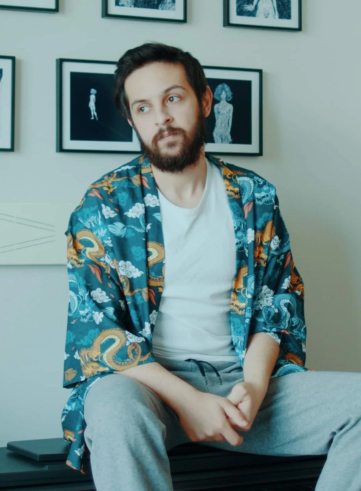

Kimse istemedi.Yine de yaptım.
Gündüz başkalarının hikâyesini satıyorum. Geceleri kendi hikâyelerimi anlatıyorum. Buradakiler gece işleri. Ben sipariş ettim, ben yaptım.
İşlere bak ↓İşler.
Bir belgesel, bir ses draması,
bir atölye, bir podcast.
Ben Barkın.
Öykücüyüm. Doğduğumdan beri.
Hikâye neyi anlattığın, anlatı nasıl anlattığın; benim derdim ikincisi. Her medium'un kendi kuralları var ve ben de bu kuralları ezbere biliyorum. Bunu iyi bilmenin en gösterişli yanı, kanunları kontrollü biçimde eğip bükerek ünik anlatılar yaratabilmek.
Yazıyorum, çiziyorum, film çekiyor, müzik yapıyorum. Arada sahneye çıkıp hikâyelerimi orada anlatıyorum. Öğreniyorum, öğrendiklerimi sistemli hale getirip kendi ekolümü inşa etmeye çalışıyorum, atölye düzenliyor ve eğitimler veriyorum.
Uzun yıllar reklam sektöründe yazarlık ve yönetmenlik yaptım, hâlâ yapıyorum. Oradan elde ettiğim gelirin tümünü kendi deneysel sanat projelerime yatırıp batırıyorum. Hayatım bu döngüden ibaret. Sitede de bu projeleri paylaşacağım.
Makul biri değilim. Yine de yazacakların varsa ulaşabilirsin.

İşler.
İşlerim. Her biri ayrı sekmede.